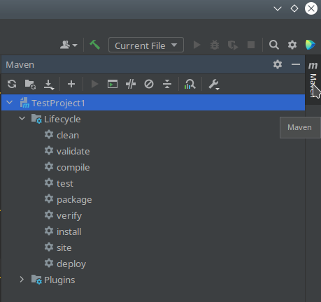
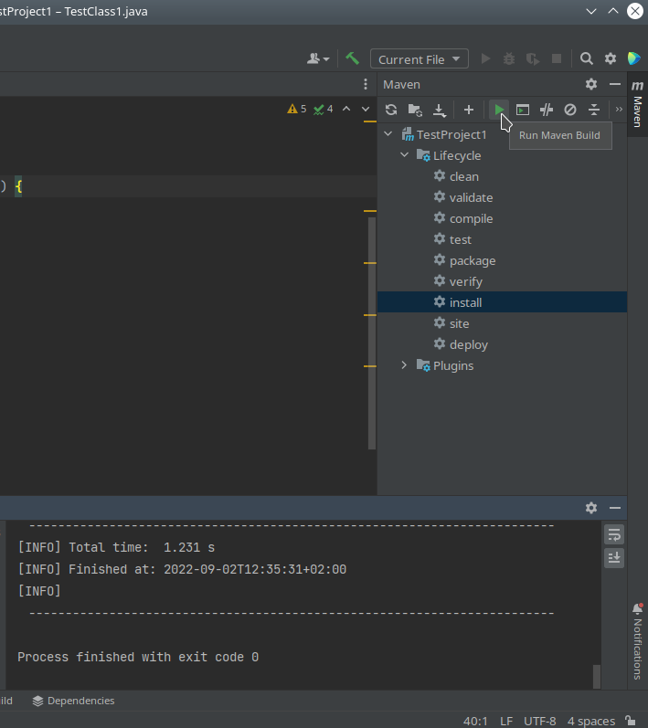
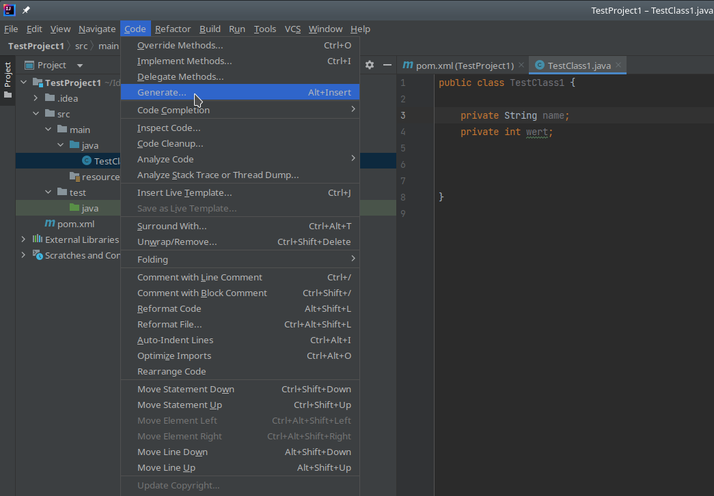
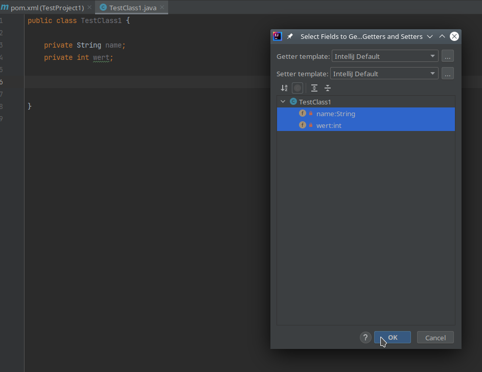
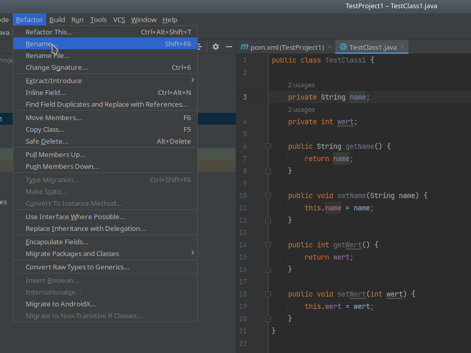
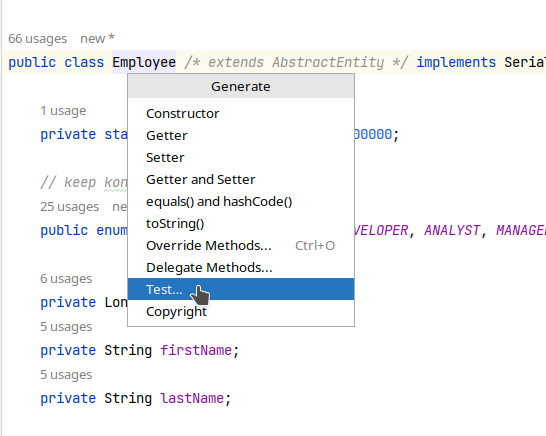
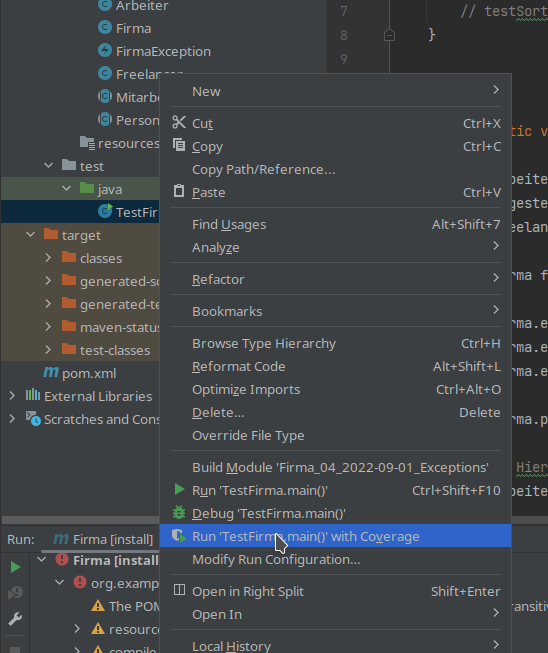
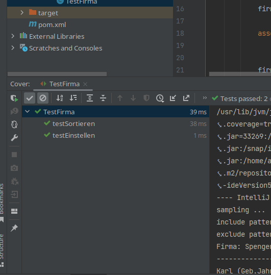

Lektion 2.1 — Teil 2: Datenstrukturen & OOP
IntelliJ, Maven & JUnit
Lernziele
- den Aufbau der
pom.xmlerklären: Java-Version, Abhängigkeiten, PluginsAbschnitt 1 - beschreiben, wozu ein Build-Werkzeug wie Maven dient, und den Build auf der Konsole ausführenAbschnitt 1
- Konstruktoren, Getter und Setter generieren lassen und anschließend überarbeitenAbschnitt 2
- Refactoring (Umbenennen), Quick-Fix (Alt+Enter) und Live-Templates nutzenAbschnitt 2
- Testklassen erzeugen und die Testabdeckung (Coverage) auswertenAbschnitt 3
1 — Maven und die pom.xml
Seit Lektion 1.1 sind unsere Projekte Maven-Projekte. Maven ist ein Build-Werkzeug:
Es übersetzt das Projekt, führt die Tests aus, baut daraus eine auslieferbare .jar-Datei und
verwaltet alle Abhängigkeiten. Braucht ein Projekt eine externe Bibliothek (für Tests,
Oberflächen, Logfiles …), trägt man sie in die pom.xml ein; Maven lädt sie automatisch
herunter und macht sie im Projekt verfügbar – so wie JUnit in Lektion 1.7.
| Teil der pom.xml | Bedeutung |
|---|---|
groupId, artifactId, version | Name des Projekts (Organisation, Projektname, Version) |
maven.compiler.release | für welche Java-Version übersetzt wird |
<dependencies> | Abhängigkeiten; <scope>test</scope> = nur für Testklassen |
<build><plugins> | Werkzeuge, die Maven beim Build verwendet (Compiler, Testausführung …) in fest eingetragenen Versionen |
target/ | Ordner, in den Maven die Ergebnisse schreibt – nie von Hand ändern |
Die einzelnen Schritte des Builds heißen Lifecycle-Phasen. In IntelliJ findest du sie im Maven-Fenster am rechten Rand; auf der Konsole ruft man sie mit mvn <phase> auf.


| Befehl | Wirkung |
|---|---|
mvn compile | übersetzt src/main/java nach target/classes |
mvn test | übersetzt auch die Tests und führt sie aus |
mvn package | baut zusätzlich die .jar-Datei in target/ |
mvn clean | löscht target/ |
IntelliJ übernimmt Änderungen an der pom.xml erst nach einem Reload (Maven-Symbol im
Editor oder im Maven-Fenster).
2 — Code generieren, umbenennen, korrigieren
Konstruktoren, Getter und Setter kannst du jetzt selbst schreiben – ab hier darfst du sie dir auch erzeugen lassen: Alt+Einfg (Generate) in der Klasse, Art wählen, Attribute auswählen, OK.


Aus einer Klasse mit den Attributen name und wert entsteht so:
public class TestClass1 {
private String name;
private int wert;
public String getName() {
return name;
}
public void setName(String name) {
this.name = name;
}
public int getWert() {
return wert;
}
public void setWert(int wert) {
this.wert = wert;
}
}Die generierten Methoden sind Vorlagen, die du überarbeiten musst – insbesondere fehlen die Parameterprüfungen.
Refactoring heißt, die Struktur von Code zu überarbeiten, ohne sein Verhalten zu ändern. Der häufigste Fall ist das Umbenennen von Variablen, Methoden oder Klassen (Shift+F6): Alle Vorkommen im Projekt werden mitgeändert.

| Kürzel | Funktion |
|---|---|
| Alt+Einfg | Generate: Konstruktor, Getter/Setter, toString, equals, Test … |
| Alt+Enter | Quick-Fix: Korrekturvorschläge zu Fehlern, z. B. fehlenden import ergänzen |
| Shift+F6 | Umbenennen (Refactoring) |
| Strg+Alt+L | Code formatieren |
sout, psvm, fori + Tab | Live-Templates: System.out.println, main-Methode, for-Schleife |
3 — Testklassen erzeugen und Testabdeckung
Eine JUnit-Testklasse lässt sich ebenfalls erzeugen: in der zu testenden Klasse Alt+Einfg
→ Test…, dann setUp/@BeforeEach und die Methoden anhaken, zu denen Testmethoden
angelegt werden sollen. IntelliJ legt die Klasse mit leeren Testmethoden in src/test/java an.

Mit Run with Coverage im Kontextmenü der Testklasse (oder des Ordners src/test/java)
werden die Tests ausgeführt und zusätzlich die Testabdeckung gemessen: welcher Anteil der
Klassen, Methoden und Zeilen beim Testen durchlaufen wurde. Nicht getestete Zeilen werden im Editor am Rand
markiert.


Ziel ist eine möglichst hohe Testabdeckung: Dann liefert das Ausführen aller Tests per Knopfdruck die Antwort,
ob nach einer Änderung noch alles funktioniert. Ohne IDE erledigt das mvn test.
Projektschritt
Die pom.xml verstehen und aufräumen
Die Personalverwaltung ist seit Lektion 1.1 ein Maven-Projekt – jetzt verstehst du ihre pom.xml: Java-Version, die JUnit-Abhängigkeit aus Lektion 1.7 und die fest eingetragenen Plugin-Versionen. Zum Aufräumen entfallen die einfachen Testklassen TestMitarbeiter und TestFirma mit ihren main-Methoden – ihre Fälle stecken jetzt in den JUnit-Tests. Führe die Tests einmal mit Run with Coverage und einmal auf der Konsole mit mvn test aus.
<?xml version="1.0" encoding="UTF-8"?>
<project xmlns="http://maven.apache.org/POM/4.0.0"
xmlns:xsi="http://www.w3.org/2001/XMLSchema-instance"
xsi:schemaLocation="http://maven.apache.org/POM/4.0.0 https://maven.apache.org/xsd/maven-4.0.0.xsd">
<modelVersion>4.0.0</modelVersion>
<groupId>at.spengergasse</groupId>
<artifactId>personalverwaltung</artifactId>
<version>1.0-SNAPSHOT</version>
<properties>
<maven.compiler.release>25</maven.compiler.release>
<project.build.sourceEncoding>UTF-8</project.build.sourceEncoding>
</properties>
<dependencies>
<!-- JUnit 5 für die Unit-Tests (nur im Test-Classpath) -->
<dependency>
<groupId>org.junit.jupiter</groupId>
<artifactId>junit-jupiter</artifactId>
<version>5.12.2</version>
<scope>test</scope>
</dependency>
</dependencies>
<build>
<plugins>
<plugin>
<groupId>org.apache.maven.plugins</groupId>
<artifactId>maven-resources-plugin</artifactId>
<version>3.3.1</version>
</plugin>
<plugin>
<groupId>org.apache.maven.plugins</groupId>
<artifactId>maven-compiler-plugin</artifactId>
<version>3.13.0</version>
</plugin>
<!-- führt die JUnit-5-Tests bei "mvn test" aus -->
<plugin>
<groupId>org.apache.maven.plugins</groupId>
<artifactId>maven-surefire-plugin</artifactId>
<version>3.2.5</version>
</plugin>
</plugins>
</build>
</project>📁 Stand nach dieser Lektion: beispiele/2.1/
Häufige Fehler
Nach dem Eintragen einer Abhängigkeit in die pom.xml sind die Klassen weiterhin rot markiert (cannot find symbol).
Maven-Projekt neu laden (Reload). Hilft das nicht: Schreibweise von groupId, artifactId und version prüfen.
Nach dem Generieren lassen sich wieder ungültige Werte setzen, z. B. ein negatives Geburtsjahr.
Generierter Code ist nur eine Vorlage: Parameterprüfungen nachtragen und die Tests laufen lassen.
mvn test meldet Tests run: 0, obwohl IntelliJ die Tests ausführt.
Ein zu altes Surefire-Plugin erkennt JUnit 5 nicht. In der pom.xml maven-surefire-plugin ab Version 3 eintragen (siehe Projektschritt) und Testklassen auf Test enden lassen.
Quiz
4 Fragen · zum Aufklappen klicken
Frage 1 Wozu dient die Datei pom.xml in einem Maven-Projekt?
pom.xml und weiß dadurch, wie das Projekt übersetzt und getestet wird und welche Bibliotheken es braucht. So lässt sich das Projekt auf jedem Rechner gleich bauen – auch ohne IntelliJ.Frage 2 Was macht der Befehl mvn test?
test kommt compile. Schlägt ein Test fehl, bricht der Build mit einer Meldung ab.Frage 3 Was solltest du tun, nachdem IntelliJ Getter, Setter und Konstruktoren generiert hat?
Frage 4 Was sagt die Testabdeckung (Coverage) aus?